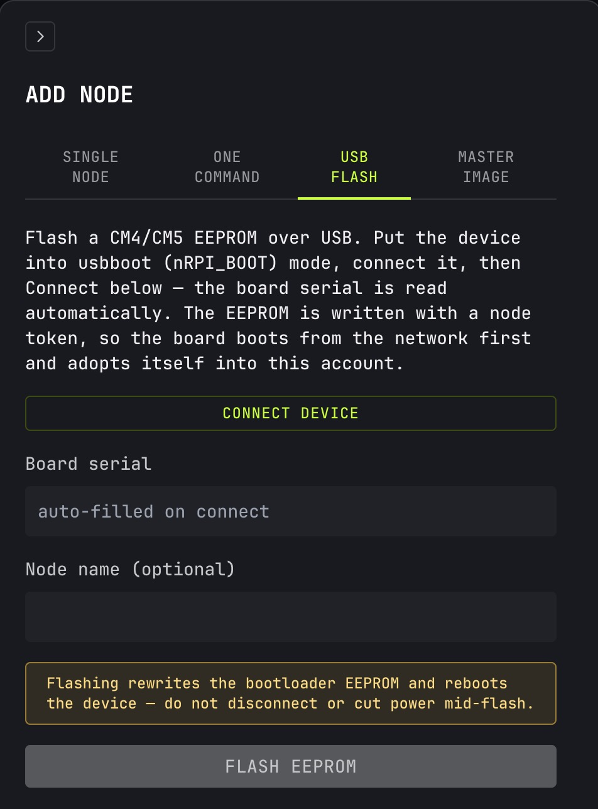
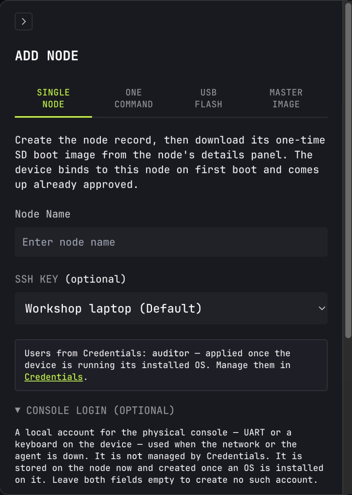
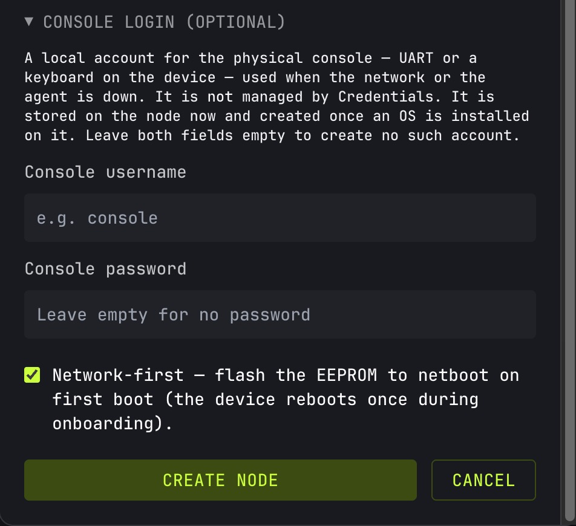
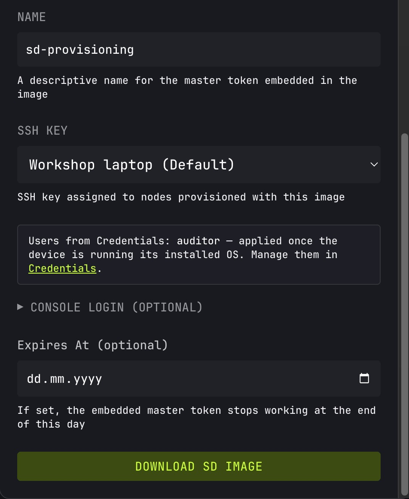
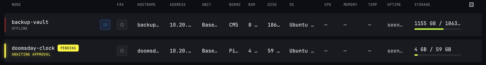
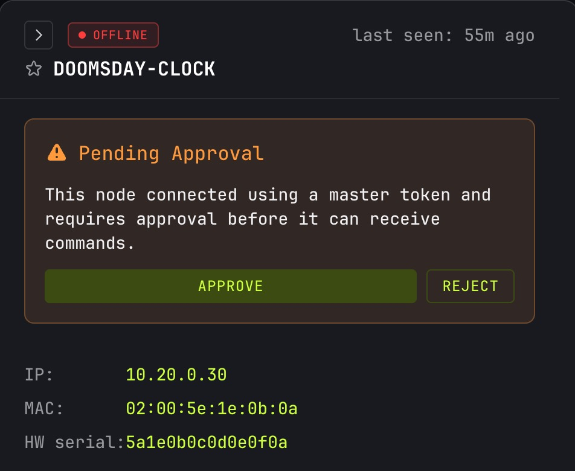
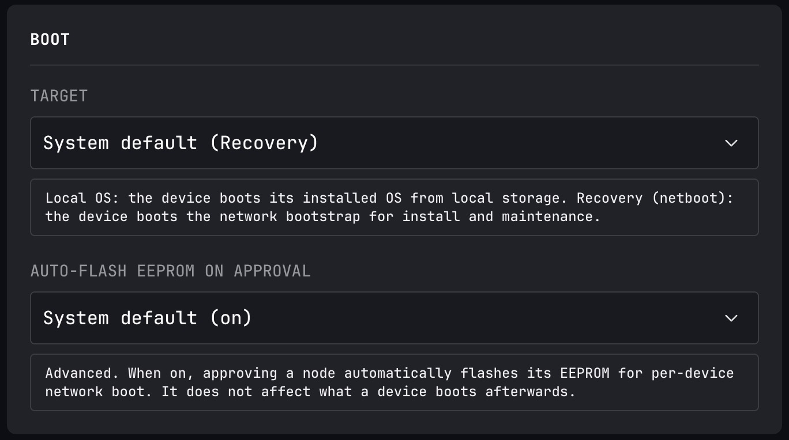

Adding a device
The four ways to turn a Raspberry Pi-class board into a managed node, what each dialog asks for, and what happens on the device afterwards.
A device becomes a node when its agent connects to the platform. This page covers the four ways to get there and what you see until the node is ready for an operating system.
Before you start
- The board must be in the supported list below and wired to the network over Ethernet. Wi-Fi is not part of the supported path.
- The device needs outbound access to the platform: HTTPS (443) and the agent port (50051 by default). Nothing has to reach the device from outside.
| Board | Status |
|---|---|
| Compute Module 4 | Validated |
| Compute Module 5 Lite | Validated |
| Raspberry Pi 5 | Validated, including the network-boot recovery round trip |
| Raspberry Pi 4 B | Partially validated: network-boot recovery proven, SD-card adoption not yet run |
| Compute Module 5 (with eMMC) | Expected to work, not validated |
| CM4S | Best effort, untested |
| Pi 400 | Incidental: covered by the Pi 4 class, not tested |
Which way to choose
Open Nodes and click Add node. The panel has four tabs.
| Your device | Use | Arrives |
|---|---|---|
| Already runs a 64-bit Debian or Ubuntu | One command: one line pasted on the device | pending approval |
| A Compute Module 4 or 5 you can put into USB boot mode next to your computer | USB flash: write the bootloader from the browser (Chrome or Edge only) | approved |
| Blank, and you want to prepare one card for one named node | Single node: create the node, then download its own SD image | approved |
| Blank, and you want one card for a batch of devices | Master image: one SD provisioning bundle for many devices | pending approval |
The card and USB paths bring their own recovery system, so the device needs no OS. Afterwards you install one from the platform: Installing an operating system.
One command (a device that already runs Linux)

- Open the One command tab.
- Token name (optional): a label for the token this creates, such as
workshop batch. Left empty, it is named after today's date. - Click Generate command. The panel shows a line under Run on the device, with Copy command below it.
- Run that line on the device as a user with sudo. It has the form
curl -fsSL https://<your platform>/install.sh | sudo sh -s -- --token '<token>'.
The token inside expires in 7 days and can adopt several devices. Each click on Generate command creates another token; manage them under Secrets → Tokens (Secrets and variables).
The device must be arm64 with a Debian-based system (systemd, dpkg, curl or wget, openssl) and a Raspberry Pi serial number. The script installs and verifies the agent, then waits for it to connect and prints OK: agent connected. The node appears Awaiting approval (see Approving a device).
To remove the agent later: curl -fsSL https://<your platform>/uninstall.sh | sudo sh.
USB flash (a Compute Module next to your computer)
This writes the board's bootloader (EEPROM) from your browser so the board boots from the network on its own. It needs Chrome or Edge and HTTPS; other browsers see a notice and an Open Master image button instead.

- Put the board into USB boot mode (
nRPI_BOOT) and connect it to your computer over USB. - Click Connect device and pick the board in the browser's USB picker. The button changes to Connected with the chip type, and Board serial fills itself in.
- Node name (optional): empty gives a generated name.
- Click Flash EEPROM. A log shows each step, and a green notice confirms the flash and names the node.
The node appears as Flashing, then Ready for Adoption; its panel says the device will netboot and come online already approved. Disconnect USB, connect Ethernet and power the board on.
Single node (one card for one named device)

- Open Single node (the default tab) and type a Node Name, for example
jetpack-test-04. - SSH key (optional): No key — attach later is fine.
- Leave Network-first ticked if the device should boot from the network from now on. The platform then rewrites the bootloader on the device's first boot, and the device reboots once during onboarding.
- Click Create Node. The node's panel opens.

The new node (Ready for Adoption) offers Download SD image in its panel: a bundle of about 90 MB with this node's own token. Unzip it onto a card prepared as in Preparing the card and boot the device from it; it binds to this node already approved. The panel also shows an install command for this node, for a device that already runs Linux.
Master image (one card for many devices)
This is the SD provisioning bundle: a ZIP with the recovery system and a newly created master token.


- Name: the name of the master token inside the bundle (default
sd-provisioning). - SSH key: the key assigned to nodes provisioned with this bundle.
- Expires At (optional): the token stops working at the end of that day. Left empty, it expires after 7 days.
- Download SD Image creates the token and downloads the ZIP. Each click creates a new token.
Unzip the bundle into the root of the card, insert it and power the device on. It boots the recovery system from the card and appears Awaiting approval. Keep the card in until the node is approved; the same card then serves the next device.
Preparing the card
On macOS, in Disk Utility:
- Choose View → Show All Devices.
- Select the card itself, not the volume on it.
- Click Erase, choose format MS-DOS (FAT) and scheme Master Boot Record.
- Unzip the bundle onto the card again.
Console login
Every tab lists the users from Credentials that will be applied to the node, and has a collapsed Console login (optional) section: a local account for UART or a keyboard, for when the network or agent is down. Credentials does not manage it. Leave both fields empty for none.
Approving a device
Devices adopted with a master token (One command and Master image) wait for approval. Single node and USB flash nodes are created by you in advance and arrive approved.

A waiting node has a pulsing yellow bar, a PENDING badge and Awaiting approval; it also appears on Status → Attention. It receives no commands until approved.

Click the node. Its panel shows the Pending Approval banner with Approve and Reject, and the device's IP, MAC and HW serial so you can tell which board is asking. A rejected node can be approved later. An approved device counts toward the server's limit of 25 free devices (The device limit).

What approval triggers depends on Auto-flash EEPROM on approval under Organization → Account defaults or the node's unit (Organization); it is on by default. For a device running the recovery system from its card, approving then writes a per-device bootloader that boots from the network first. The device reboots into the recovery system over the network. Once the node shows Recovery, take the card out. A One command device runs its own OS, so approval flashes nothing.
What a new node looks like
A node booted over the network glows violet and reads Recovery: its hostname ends in -recovery, the OS column shows the recovery system (Buildroot), and live metrics work. That is normal for a device with no installed OS. A One command node shows green and Online instead.
Next steps
- Installing an operating system on a recovery node.
- The node panel: tabs, commands and terminal.
- Organization: move the node into a unit to pick up its policies.